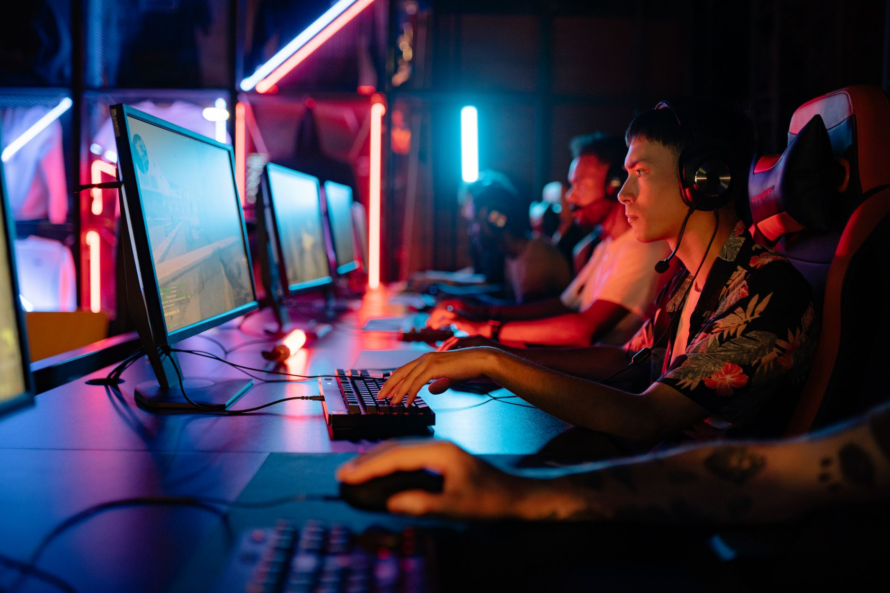

Overview of the Thunderpick World Championship
The Thunderpick World Championship is shaping up to be one of the most significant events in the current esports calendar. As teams from across the globe prepare to descend upon the competition, fans are eager to see which organizations will rise to the top of the leaderboard. This tournament represents a massive milestone for the platform, bringing together top-tier professional players in a high-intensity environment.
Unlike standard seasonal leagues, this championship focuses on a concentrated burst of high-level gameplay. The event is designed to test the tactical depth, mechanical skill, and mental fortitude of the world's best Counter-Strike players. For spectators, it promises a weekend of intense matches, unexpected upsets, and legendary plays that will be talked about for months to come.
Tournament format and competition structure
To ensure that only the most consistent teams reach the grand finals, the organizers have implemented a rigorous tournament structure. The competition begins with a group stage where teams are split into different brackets to battle for survival. This phase is crucial, as one bad series can lead to early elimination in this high-pressure setting.
The use of the double-elimination format in the opening stages adds a layer of strategy and tension. Teams must manage their momentum carefully, knowing that a loss in the lower bracket requires a much longer path to the trophy. This structure rewards teams that can adapt quickly to different playstyles and maintain peak performance throughout the entire event.
Participating teams and star talent
The roster of teams participating in the Thunderpick World Championship features a mix of legendary veterans and rising superstars. Fans can expect to see heavyweights from the European scene competing against aggressive challengers from the Americas and Asia. This diversity of playstyles ensures that no two matches will feel the same.
The level of competition we are seeing this year is unprecedented, with every single team capable of taking down a top-five ranked opponent on any given day.
Beyond the team names, the individual talent on display is what truly drives the excitement. We are looking at elite AWPers who can turn a game on its head with a single shot, and tactical leaders who orchestrate complex executes with surgical precision. Watching these players compete at the highest level provides a masterclass in professional gaming.
Prize pool and fantasy esports opportunities
Financial incentives play a massive role in driving the intensity of professional esports. The Thunderpick World Championship offers a substantial prize pool that will significantly impact the rankings and prestige of the winning organization. For the players, winning this event is not just about the money, but about cementing their legacy in the history of the game.
In addition to the professional prize pool, fans can engage with the tournament through fantasy esports. This allows viewers to build their own dream teams using real-world player statistics. It adds a whole new dimension to the viewing experience, as fans find themselves rooting for specific players to perform well in their fantasy lineups.
How to watch and follow the schedule
Staying updated with the match schedule is essential for fans who do not want to miss a single moment of the action. Matches are scheduled across multiple days, with peak viewership expected during the playoff stages. Most matches will be broadcast live on major streaming platforms, providing high-quality commentary and professional production.
Whether you are watching via a primary streaming service or following live updates on social media, the accessibility of this event makes it easy for the global community to participate. We recommend setting reminders for the group stage matches, as the early games often set the tone for the entire tournament.
As the esports landscape continues to evolve, major tournaments like this one bridge the gap between casual viewing and professional analysis. For those who enjoy tracking the biggest names in competitive gaming, staying tuned to live updates is the best way to remain part of the conversation. If you enjoyed following the intensity of previous major events, you might want to check out our coverage of the ESL Pro League S24 Grand Final: Live Match Updates at https://dhyey.bond/blog/esl-pro-league-s24-grand-final-live-match-updates/ to see how other legends have performed.
See Also
If you enjoyed this Esports News article, check out ESL Pro League S24 Grand Final: Live Match Updates for more useful reading.